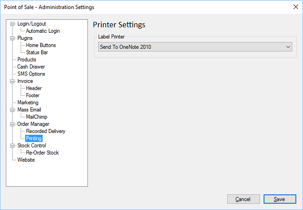

Label Printing Settings
Previous
Top
Next
Allows administrators to set which printer is the label printer which is used during Dispatch Orders.

Label Printer
- Select a printer from the list of installed printers.